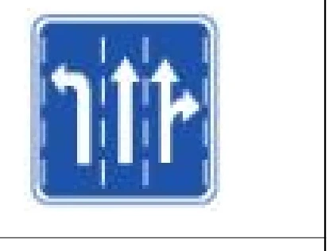

924. Дараах аюулгүй байдлын тэмдгийн утга болон энэ тэмдэг байрлуулсан зам дээр жолоодох аргаас зөв нь аль вэ?

- ①Чиглэл тус бүрээр зорчих эгнээг заасан тэмдэг бөгөөд хориглох тэмдэг юм.
- ②Тээврийн хэрэгсэл зүүн эргэх, чигээрээ явах эсвэл баруун эргэхийг заасан анхааруулах тэмдэг юм.
- ③Тээврийн хэрэгсэл зүүн эргэхдээ уулзварын төвийн гадна талаар эргэнэ.
- ④Тээврийн хэрэгсэл зүүн эргэхдээ урьдчилан замын төв шугам даган удаан явна.
Хариулт харах
Зөв хариулт
④ Тээврийн хэрэгсэл зүүн эргэхдээ урьдчилан замын төв шугам даган удаан явна.
Үндэслэл
Замын хөдөлгөөний тухай хуулийн дагаж мөрдөх журмын 6-р хавсралт Замын хөдөлгөөний ангилалын тэмдгийг чиглэлээр нь (Чиглэлийн тэмдэг No315) Автомашиныг зүүн, шулуун, баруун гар тийш эргүүлэх зааварчилгаа. Замын хөдөлгөөний тухай хуулийн 25 дугаар зүйл (Уулзвар гарцын арга) 1-р зүйл Бүх тээврийн хэрэгслийн жолооч нар уулзвар дээр баруун тийш эргэх гэж байгаа бол замын баруун захаар удаан явж байхдаа баруун эргэх ёстой. Энэ тохиолдолд баруун тийш эргэж буй машины жолооч дохионы дагуу зогсох эсвэл цааш явах явган зорчигч эсвэл унадаг дугуйнд анхаарлаа хандуулах ёстой. 2-р зүйл. Аливаа тээврийн хэрэгслийн жолооч уулзвар дээр зүүн эргэх гэж байгаа бол замын голын шугамаар урьдчилан удаан явж, уулзварын голд зүүн гар тийш эргэх ёстой.
Үндэслэлийн текст нь машин орчуулга.